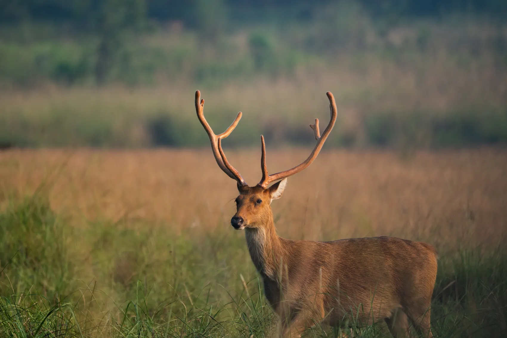
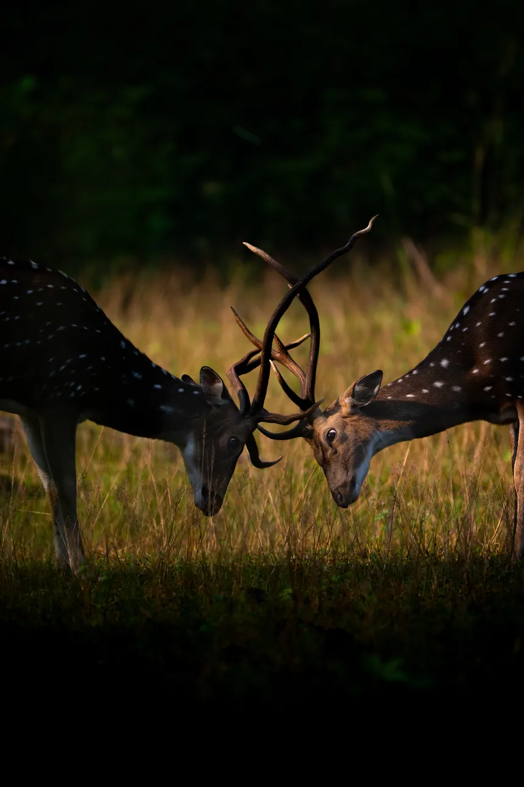

Mammals
- Hard-ground barasingha
- Bengal tiger
- Indian leopard
- Gaur
- Dhole (wild dog)
- Sloth bear
- Sambar
- Chital
- Barking deer

Kanha · Madhya Pradesh · Central India
Wide meadows, sal trees and the remarkable barasingha.
Get to know Kanha
Kanha has a way of making you look a little longer. Morning light moves across its grasslands while deer browse near the forest edge. A langur watches from a tree and a bird calls somewhere overhead. There may be a tiger on the next turn. There may be something smaller and just as interesting.
The landscape is a beautiful mix of sal forests, bamboo, grasslands and mixed woodland. Kanha is especially important for the hard-ground barasingha, a form of swamp deer whose recovery is one of the reserve's most meaningful conservation stories.
A wonderfully varied forest for families, birdwatchers and travellers who enjoy the whole ecosystem.
Our journeys are about learning to notice the forest, not chasing wildlife for a photograph. There's always more to discover, even when a tiger stays out of sight.
Plan Your Journey
Wildlife, birds, flora and fauna
These animals and plants belong to the wider reserve ecosystem. They are not a checklist of guaranteed sightings. Your naturalist helps you notice what each safari offers.
Look closely and you may also notice butterflies, insects, fungi and other smaller forest life.
Birdwatching: The Madhya Pradesh Forest Department's Kanha brochure lists about 300 bird species, alongside 43 mammal species. Birdwatching often begins with what you hear from the vehicle.
Habitat: Sal woodland, bamboo, grassy meadows and seasonal watercourses. Different places within a reserve can feel like different forests.
Moments from the forest
A closer look at the animals, birds and landscapes featured in the field collections shared with Weavor. Take your time with the details.
Wildlife photograph
From this reserve collection
Wildlife photograph
From this reserve collection
Wildlife photograph
From this reserve collection
Wildlife photograph
From this reserve collection
Wildlife photograph
From the wider India wildlife collection
Photographs marked as part of the wider India wildlife collection are illustrative and are not represented as having been taken in Kanha. Actual wildlife encounters vary by trip.
Understanding tiger country
These numbers describe the reserve and its habitats. They do not predict wildlife encounters or guarantee tiger sightings.
Kanha | Dated assessment and habitat records
The tiger estimate is from the 2022 national assessment, published in 2023, within reserve boundaries. It is not a live count or a sighting guarantee. Species figures are recorded biodiversity totals, not sightings expected on one trip. Read the 2022 report.
Sal woodland, bamboo, grassy meadows and seasonal watercourses.
Understand the landscape
Kanha helped bring the hard-ground barasingha back from the brink. Seeing this deer in the grasslands provides a natural starting point for a conversation about habitat management, prey species and how protecting an animal means caring for the landscape it needs.
Plan with confidence
We'll help you plan around park regulations, permit availability and sensible travel connections. The right pace matters more than collecting as many drives as possible.
Tourism in the core zones usually runs from mid-October until the end of June. Exact calendars, safari days and any buffer-zone access should be confirmed for the season you plan to visit.
Jabalpur is a common flight and rail gateway; Gondia is another connection used for some routes. Transfers depend on the lodge and whether you enter near Khatia or Mukki.
We suggest starting with 3 to 5 nights. We'll work out an itinerary that suits your pace, preferred accommodation and other places you hope to visit in India.
Safari permits, entry zones, vehicle arrangements, access restrictions and seasons are determined by the responsible forest authorities. We confirm current rules before you book.
Learn to read the jungle
When you travel with someone who knows the forest, the smallest observations can open up a whole new story.
Watch for barasingha and other deer in the meadows, especially as the light changes.
Listen for drongos, flycatchers, woodpeckers and raptors around forest edges.
Compare grassland and sal forest habitats and the animals that use each.
Before you travel
Kanha is central to the survival of the hard-ground barasingha. Conservation and habitat work have helped the species recover.
Yes. Its mosaic of woodland and grasslands supports rich birdlife and makes the forest itself part of the experience.
Yes. They make a natural Central India pairing for a longer trip, provided you allow enough time for the road transfer and multiple safari drives.
Three to five nights is a comfortable starting point for exploring the reserve without hurrying.
No. Tigers and other animals are wild, and no sighting is guaranteed. We suggest allowing several drives and staying curious about everything the forest reveals.
Plan your Kanha journey
Tell us about the wildlife you're most interested in, your preferred dates and who you're travelling with. We'll help you explore what a considered Kanha journey could look like.
You don't need to have an itinerary worked out before you enquire.
plan@weavor.meOther forests to discover
The tiger figure shown above is the 2022 national assessment estimate within reserve boundaries, published in 2023. It is not a current live population count, and figures for different reserves may involve different study boundaries or survey methods. Bird and plant figures are species records, not an indication of what one visitor will see. Park operating periods should be checked again before travel.